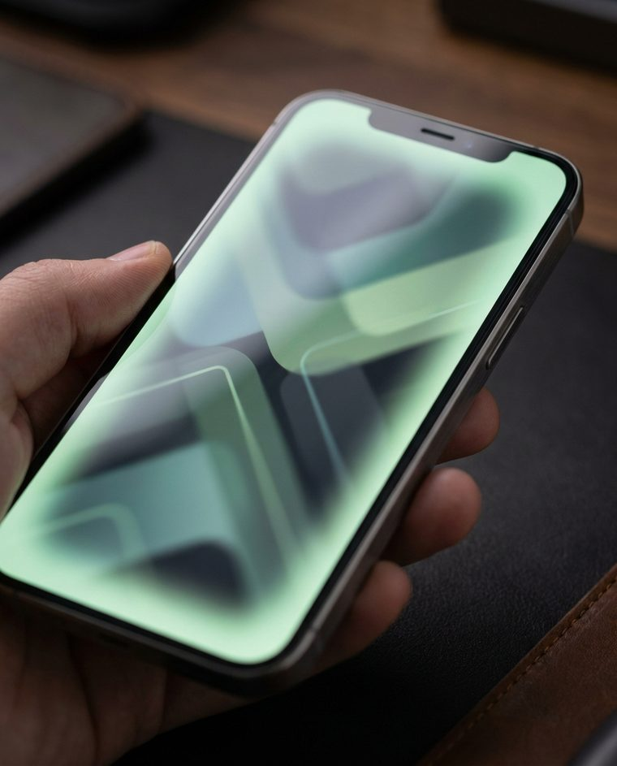
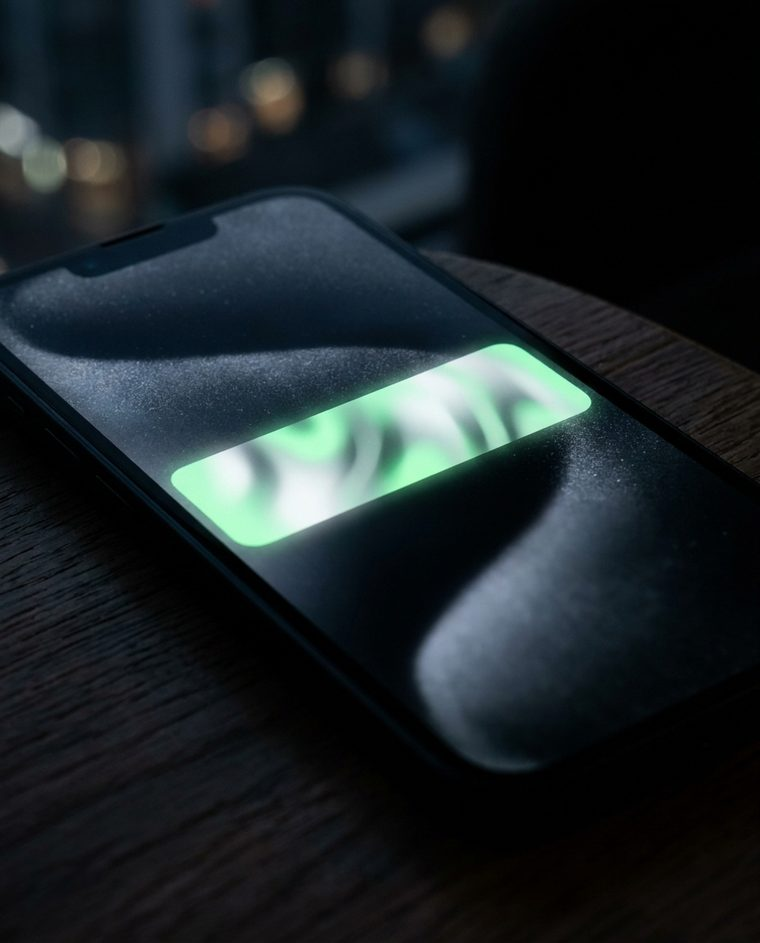

01 / SHELL
WebView 셸
JavaScript·DOM 스토리지·뒤로가기·오류 화면. 웹이 앱 안에서 ‘정상 웹’으로 돌게 만드는 설정. 이게 어설프면 흰 화면·먹통 뒤로가기가 납니다.
이미 운영 중인 모바일웹을 다시 개발하지 않습니다. Android 하이브리드(WebView)로 감싸 Google Play에 배포하고, 웹만으로는 어려운 FCM 푸시로 재방문을 만듭니다. 단, ‘그냥 웹뷰’는 반려됩니다 — 그 경계를 아래에서 직접 확인하세요.
Google Play는 2025년부터 ‘웹을 상자에 넣은’ 앱을 정책 4.3(최소 기능)으로 반려합니다. 푸시·파일·오프라인·네이티브 내비게이션 — 이 네 가지가 있어야 앱은 ‘앱’이 됩니다. WRAPLY는 그 경계를 코드가 아니라 화면으로 증명합니다.
각 기둥은 의뢰하신 요구사항이자, 잘못 만들면 그대로 실패하는 지점입니다. 카드 위에 마우스를 올려 보세요.

JavaScript·DOM 스토리지·뒤로가기·오류 화면. 웹이 앱 안에서 ‘정상 웹’으로 돌게 만드는 설정. 이게 어설프면 흰 화면·먹통 뒤로가기가 납니다.

디바이스 토큰·알림 표시·탭 시 딥링크. 서버는 HTTP v1(서비스 계정)로 발송. Legacy 서버키는 2024년 종료돼 그대로면 푸시가 안 나갑니다.
파일 첨부(onShowFileChooser)·다운로드·카메라 권한, 그리고 재실행해도 유지되는 로그인(쿠키 flush). 웹처럼 ‘그냥 되겠지’가 가장 많이 깨지는 곳.
키스토어 서명·릴리스 빌드·타깃 API 36·Data Safety·개인정보처리방침. 기능이 있어도 등록 정보가 비면 반려됩니다.
모든 버튼은 실제로 동작합니다. 로그인 유지 OFF로 두고 ‘앱 재시작’을 누르면 재실행 시 로그아웃되는 흔한 버그를 재현하고, ON이면 유지됩니다. 파일 첨부·오프라인·뒤로가기·푸시도 네이티브 셸이 어떻게 처리하는지 그대로 보여 줍니다.
‘웹을 감싼 앱’은 네이티브 가치와 등록 정보가 갖춰져야 통과합니다. 항목을 켜고 끄면 통과 가능성이 실제로 계산됩니다.
공고는 “기존 PHP 소스 수정”이라 적혀 있습니다. 그런데 그 기존 코드가 Legacy(서버키) 방식이면, 그건 수정이 아니라 인증 체계 전면 교체이고 이미 발송이 멈춰 있습니다. 현재 방식을 골라 확인하세요.
Firebase 콘솔에서 서비스 계정 키(JSON) 발급·서버에 안전 보관
PHP에서 JWT 서명 → OAuth2 액세스 토큰 발급(1시간 캐시)
발송 엔드포인트를 /v1/projects/PID/messages:send로 교체
payload를 message.notification + data(deeplink) 구조로 재작성
토큰 만료·NotRegistered 정리 로직 추가(반송 토큰 삭제)
지적으로 끝내지 않았습니다. 각 항목은 위 데모·진단 화면에 이미 대응이 구현돼 있습니다. 근거는 공식 문서·정책으로 붙였습니다.
코드베이스는 하나. 웹을 고치면 앱도 같이 바뀝니다. 앱은 푸시·파일·세션·배포만 책임지는 얇은 네이티브 셸입니다 — 유지보수가 두 배가 되지 않도록.
작업별 공수를 그대로 공개합니다. 예산에 맞춘 숫자가 아니라 범위에 대한 산정 결과입니다.
| 작업 | 일수 |
|---|---|
| WebView 셸 구현 — JS·DOM스토리지·뒤로가기·오류/로딩 화면·런타임 권한 | 5 |
| 파일 업로드/다운로드 — onShowFileChooser·카메라(FileProvider)·DownloadManager | 3 |
| 로그인 유지 — CookieManager 영속·flush·세션 만료 대응 | 1.5 |
| Firebase 신규 프로젝트 + FCM SDK 연동(토큰·수신·표시·딥링크) | 3 |
| 기존 PHP → HTTP v1 전환(서비스 계정·OAuth2·payload·토큰 정리) | 3.5 |
| 앱 서명·릴리스 빌드·Play Console 등록·Data Safety·심사 대응 | 3 |
| 운영 매뉴얼(빌드·배포·푸시 발송) 및 QA·수정 반영 | 3 |
| 합계 (VAT 별도) | 22일 · 220만원 |
※ 공고 예산(300만원)은 참고만 합니다. 공수대로 계산한 금액을 제시합니다. Firebase·Play 개발자 계정($25, 1회)·기존 PHP 서버 접근·유료 폰트/이미지 라이선스·개인정보처리방침 문안 검토는 의뢰자 부담 영역입니다.